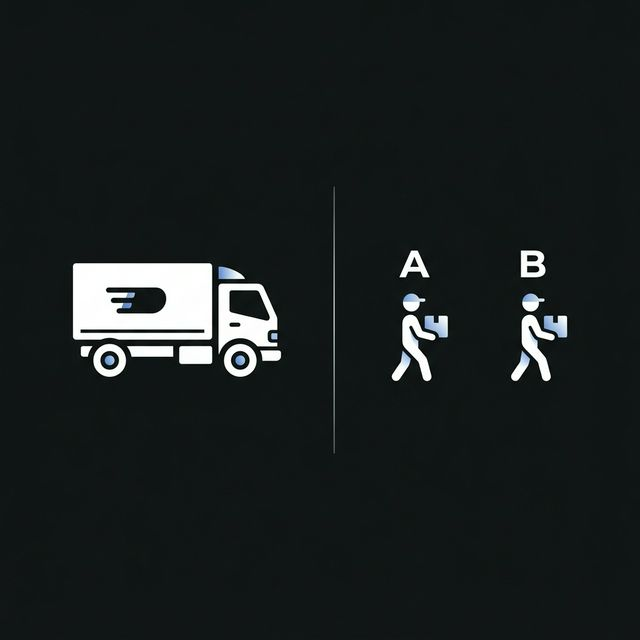

Global Express firması, kritik tıbbi sevkiyatlar için yeni bir kurye ortağı arayışında. İki aday (A ve B) ile yapılan pilot sevkiyatların beklenen değeri (ortalama süresi) tamamen aynıdır.
Peki, ortalamaların eşit olduğu bu senaryoda seçim kriteri ne olmalıdır?
Lojistik operasyonlarında sadece hızı (beklenen değer) değil, sistemin öngörülebilirliğini de ölçmek gerekir.
N: 30 Sevkiyat
E[X]: 30 Dakika
SLA: < 45 Dakika
